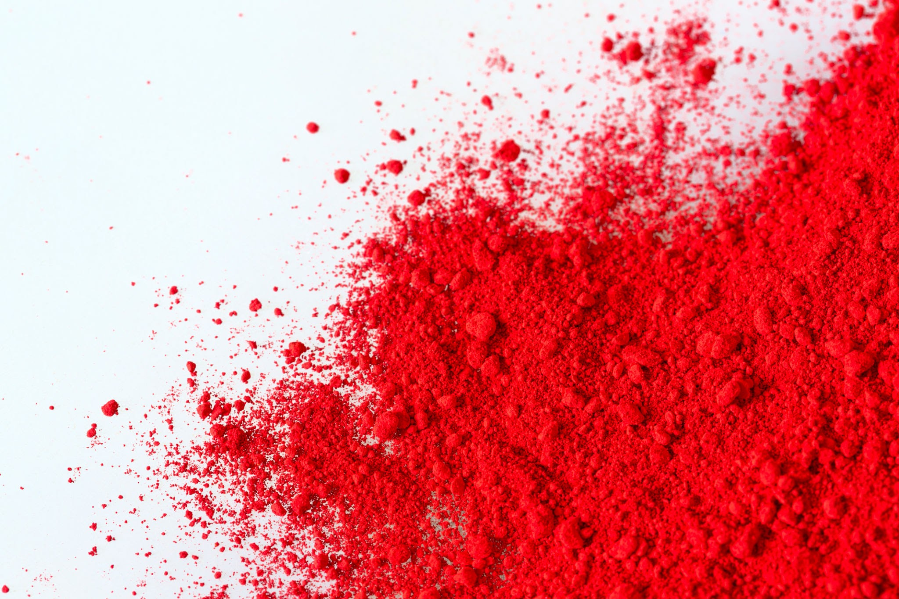

<!doctype html>
<html lang="en" data-theme="light">
<head>
<meta charset="utf-8">
<title>SCDS — Landing</title>
<meta name="viewport" content="width=1440">
<link rel="icon" type="image/svg+xml" href="system/mark-icon-light.svg">
<link rel="stylesheet" href="system/colors_and_type.css">

<style>
  *, *::before, *::after { box-sizing: border-box; }
  html, body { margin: 0; padding: 0; height: 100%; background: var(--sc-p-color-warm-gray-200); font-family: var(--sc-p-font-family-text); color: var(--sc-color-text-primary); }
  img { display: block; max-width: 100%; }

  /* ─── shared landing chrome ───────────────────────────── */
  .landing {
    position: relative;
    width: 100%;
    height: 100%;
    overflow: hidden;
    background: var(--sc-color-surface-page);
    color: var(--sc-color-text-primary);
    font-family: var(--sc-p-font-family-text);
  }

  /* nav */
  .nav {
    position: absolute;
    inset: 0 0 auto 0;
    display: flex;
    align-items: center;
    justify-content: space-between;
    padding: 24px 40px;
    z-index: 10;
  }
  .nav__left { display: flex; align-items: center; gap: 14px; }
  .nav__mark { width: 22px; height: 22px; }
  .nav__brand {
    font-family: var(--sc-p-font-family-display);
    font-weight: var(--sc-p-font-weight-medium);
    font-size: 14px;
    letter-spacing: -0.005em;
    color: var(--sc-color-text-primary);
  }
  .nav__sub {
    font: var(--sc-t-mono-chrome);
    color: var(--sc-color-text-secondary);
    letter-spacing: 0.08em;
    text-transform: uppercase;
    border-left: 1px solid var(--sc-color-border-default);
    padding-left: 14px;
    margin-left: 4px;
  }
  .nav__links { display: flex; gap: 32px; align-items: center; }
  .nav__links a {
    font: var(--sc-t-label-ui);
    color: var(--sc-color-text-primary);
    text-decoration: none;
    font-size: 13px;
    letter-spacing: -0.005em;
    transition: color var(--sc-motion-hover-duration) var(--sc-motion-hover-easing);
  }
  .nav__links a:hover { color: var(--sc-color-brand-accent); }
  .nav__meta {
    font: var(--sc-t-mono-chrome);
    color: var(--sc-color-text-secondary);
    letter-spacing: 0.08em;
    text-transform: uppercase;
  }

  /* primary CTA — solid shu */
  .cta {
    display: inline-flex;
    align-items: center;
    gap: 14px;
    background: var(--sc-color-brand-accent);
    color: var(--sc-p-color-utility-white, #ffffff);
    border: none;
    border-radius: var(--sc-radius-surface);
    padding: 16px 22px;
    text-decoration: none;
    font-family: var(--sc-p-font-family-display);
    font-weight: var(--sc-p-font-weight-medium);
    font-size: 15px;
    letter-spacing: -0.005em;
    cursor: pointer;
    transition: background var(--sc-motion-hover-duration) var(--sc-motion-hover-easing),
                transform var(--sc-motion-press-duration) var(--sc-motion-press-easing);
  }
  .cta:hover { background: var(--sc-color-brand-accent-deep); }
  .cta:active { transform: scale(var(--sc-motion-press-scale)); }
  .cta__arrow { display: inline-block; transition: transform 200ms var(--sc-motion-hover-easing); }
  .cta:hover .cta__arrow { transform: translateX(4px); }

  /* metabar bottom */
  .metabar {
    position: absolute;
    inset: auto 0 0 0;
    display: flex;
    justify-content: space-between;
    align-items: center;
    padding: 22px 40px;
    z-index: 10;
    pointer-events: none;
  }
  .metabar > * {
    font: var(--sc-t-mono-chrome);
    color: var(--sc-color-text-secondary);
    letter-spacing: 0.08em;
    text-transform: uppercase;
  }
  .metabar__dot {
    display: inline-block;
    width: 6px; height: 6px;
    border-radius: 50%;
    background: var(--sc-color-brand-accent);
    margin-right: 8px;
    vertical-align: middle;
    animation: pulse 2.4s ease-in-out infinite;
  }
  @keyframes pulse {
    0%, 100% { opacity: 1; }
    50% { opacity: 0.3; }
  }

  /* side rail vertical text */
  .siderail {
    position: absolute;
    top: 50%;
    transform-origin: center;
    font: var(--sc-t-mono-chrome);
    color: var(--sc-color-text-secondary);
    letter-spacing: 0.18em;
    text-transform: uppercase;
    white-space: nowrap;
    z-index: 9;
  }
  .siderail--left {
    left: 16px;
    transform: translateY(-50%) rotate(-90deg);
  }
  .siderail--right {
    right: 16px;
    transform: translateY(-50%) rotate(90deg);
  }


  /* ─── OPTION A — PIGMENT (with powder image) ───────────────────── */

  .pigment .hero {
    position: absolute;
    inset: 0;
    display: grid;
    grid-template-columns: 1fr 1.05fr;
  }
  .pigment .hero__left {
    padding: 160px 56px 96px 80px;
    display: flex;
    flex-direction: column;
    justify-content: space-between;
    position: relative;
    z-index: 5;
  }
  .pigment .hero__eyebrow {
    display: flex;
    align-items: center;
    gap: 14px;
    font: var(--sc-t-mono-chrome);
    color: var(--sc-color-text-secondary);
    letter-spacing: 0.08em;
    text-transform: uppercase;
  }
  .pigment .hero__title {
    margin: 24px 0 0 0;
    font-family: var(--sc-p-font-family-display);
    font-weight: var(--sc-p-font-weight-light);
    font-size: 92px;
    line-height: 0.96;
    letter-spacing: var(--sc-p-font-tracking-tightest);
    color: var(--sc-color-text-primary);
    text-wrap: balance;
  }
  .pigment .hero__title em {
    font-style: italic;
    font-weight: var(--sc-p-font-weight-light);
    color: var(--sc-color-brand-accent);
  }
  .pigment .hero__lede {
    max-width: 420px;
    margin: 0 0 24px 0;
    font-family: var(--sc-p-font-family-text);
    font-weight: var(--sc-p-font-weight-regular);
    font-size: 15px;
    line-height: 1.55;
    color: var(--sc-color-text-secondary);
    text-wrap: pretty;
  }
  .pigment .hero__foot {
    display: flex;
    align-items: center;
    gap: 24px;
  }
  .pigment .hero__cta-meta {
    font: var(--sc-t-mono-chrome);
    color: var(--sc-color-text-disabled);
    letter-spacing: 0.08em;
    text-transform: uppercase;
    line-height: 1.5;
  }

  .pigment .hero__right {
    position: relative;
    overflow: hidden;
    background: var(--sc-p-color-warm-gray-50, #F1EFEB);
  }
  .pigment .hero__image {
    position: absolute;
    inset: 0;
    width: 100%;
    height: 100%;
    object-fit: cover;
    object-position: 60% 50%;
    /* slight zoom so powder reads as a presence */
    transform: scale(1.04);
    filter: contrast(1.05) saturate(1.08);
  }
  /* faint hairline at the seam */
  .pigment .hero__right::before {
    content: "";
    position: absolute;
    inset: 0 auto 0 0;
    width: 1px;
    background: var(--sc-color-border-default);
    z-index: 2;
  }

  /* tiny figure caption over image */
  .pigment .figcaption {
    position: absolute;
    top: 120px;
    right: 40px;
    display: flex;
    flex-direction: column;
    align-items: flex-end;
    gap: 4px;
    font: var(--sc-t-mono-chrome);
    color: var(--sc-color-text-on-accent, #ffffff);
    letter-spacing: 0.08em;
    text-transform: uppercase;
    text-shadow: 0 1px 2px rgba(0,0,0,0.25);
    z-index: 6;
  }
  .pigment .figcaption strong {
    font-weight: var(--sc-p-font-weight-semibold);
    color: #fff;
  }

  /* big asymmetric index number floating top of left column */
  .pigment .indexglyph {
    position: absolute;
    top: 96px;
    right: 56%;
    margin-right: -36px;
    font-family: var(--sc-p-font-family-display);
    font-weight: var(--sc-p-font-weight-light);
    font-size: 140px;
    line-height: 1;
    color: var(--sc-p-color-warm-gray-300, #d4cfc6);
    letter-spacing: -0.04em;
    z-index: 4;
    user-select: none;
  }


  /* ─── OPTION B — MA (pure type) ───────────────────── */

  .ma {
    background: var(--sc-p-color-warm-gray-100);
  }
  .ma .hero {
    position: absolute;
    inset: 0;
    padding: 120px 80px 96px 80px;
    display: flex;
    flex-direction: column;
    justify-content: flex-end;
    z-index: 5;
  }

  /* the 朱 glyph — massive, off-axis, shu vermilion */
  .ma__glyph {
    position: absolute;
    top: -120px;
    right: -60px;
    font-family: "Hiragino Mincho ProN", "Yu Mincho", "Songti SC", "Noto Serif JP", serif;
    font-weight: 400;
    font-size: 1080px;
    line-height: 0.9;
    color: var(--sc-color-brand-accent);
    letter-spacing: -0.04em;
    z-index: 1;
    user-select: none;
    /* slight ink-on-paper feel: soft red, subtle blur */
    text-shadow: 0 0 60px rgba(200, 40, 28, 0.15);
  }
  /* secondary "ma" character, smaller, ghosted in opposite corner */
  .ma__glyph--secondary {
    position: absolute;
    bottom: -200px;
    left: -100px;
    top: auto;
    right: auto;
    font-size: 720px;
    color: var(--sc-p-color-warm-gray-300);
    opacity: 0.55;
    z-index: 0;
    text-shadow: none;
  }

  .ma .hero__eyebrow {
    display: flex;
    align-items: center;
    gap: 14px;
    font: var(--sc-t-mono-chrome);
    color: var(--sc-color-text-secondary);
    letter-spacing: 0.08em;
    text-transform: uppercase;
    margin-bottom: 24px;
  }
  .ma .hero__title {
    margin: 0 0 28px 0;
    font-family: var(--sc-p-font-family-display);
    font-weight: var(--sc-p-font-weight-light);
    font-size: 116px;
    line-height: 0.94;
    letter-spacing: var(--sc-p-font-tracking-tightest);
    color: var(--sc-color-text-primary);
    max-width: 1100px;
    text-wrap: balance;
  }
  .ma .hero__title em {
    font-style: italic;
    font-weight: var(--sc-p-font-weight-light);
    color: var(--sc-color-brand-accent);
  }
  .ma .hero__row {
    display: flex;
    align-items: flex-end;
    justify-content: space-between;
    gap: 80px;
    max-width: 1280px;
  }
  .ma .hero__lede {
    max-width: 480px;
    margin: 0;
    font-family: var(--sc-p-font-family-text);
    font-weight: var(--sc-p-font-weight-regular);
    font-size: 16px;
    line-height: 1.55;
    color: var(--sc-color-text-secondary);
    text-wrap: pretty;
  }
  .ma .hero__cta-block {
    display: flex;
    flex-direction: column;
    align-items: flex-end;
    gap: 12px;
  }
  .ma__principlecard {
    position: absolute;
    top: 140px;
    right: 80px;
    z-index: 6;
    background: var(--sc-color-surface-page);
    border: 1px solid var(--sc-color-border-default);
    border-radius: var(--sc-radius-surface);
    padding: 18px 22px;
    display: flex;
    flex-direction: column;
    gap: 14px;
    width: 320px;
    box-shadow: var(--sc-elevation-card);
  }
  .ma__principlecard__head {
    display: flex;
    align-items: center;
    justify-content: space-between;
    font: var(--sc-t-mono-chrome);
    color: var(--sc-color-text-secondary);
    letter-spacing: 0.08em;
    text-transform: uppercase;
  }
  .ma__principlecard__head strong {
    color: var(--sc-color-text-primary);
    font-weight: var(--sc-p-font-weight-semibold);
  }
  .ma__principlelist {
    list-style: none;
    margin: 0;
    padding: 0;
    display: flex;
    flex-direction: column;
    gap: 6px;
  }
  .ma__principlelist li {
    display: flex;
    align-items: baseline;
    justify-content: space-between;
    gap: 12px;
    font-family: var(--sc-p-font-family-text);
    font-weight: var(--sc-p-font-weight-regular);
    font-size: 13px;
    color: var(--sc-color-text-primary);
    padding: 4px 0;
    border-bottom: 1px solid var(--sc-color-border-subtle);
  }
  .ma__principlelist li:last-child { border-bottom: none; }
  .ma__principlelist .num {
    font: var(--sc-t-mono-chrome);
    color: var(--sc-color-text-disabled);
    letter-spacing: 0;
  }


  /* ─── shared dec elements ─── */

  /* hairline crosshair markers in the corners — quietly award-style */
  .crossmark {
    position: absolute;
    width: 18px; height: 18px;
    pointer-events: none;
    z-index: 4;
  }
  .crossmark::before, .crossmark::after {
    content: "";
    position: absolute;
    background: var(--sc-color-border-default);
  }
  .crossmark::before { left: 50%; top: 0; bottom: 0; width: 1px; transform: translateX(-50%); }
  .crossmark::after  { top: 50%; left: 0; right: 0; height: 1px; transform: translateY(-50%); }
  .crossmark--tl { top: 88px; left: 32px; }
  .crossmark--tr { top: 88px; right: 32px; }
  .crossmark--bl { bottom: 76px; left: 32px; }
  .crossmark--br { bottom: 76px; right: 32px; }

</style>

<!-- React + Babel for the design canvas -->
<script src="https://unpkg.com/react@18.3.1/umd/react.development.js" integrity="sha384-hD6/rw4ppMLGNu3tX5cjIb+uRZ7UkRJ6BPkLpg4hAu/6onKUg4lLsHAs9EBPT82L" crossorigin="anonymous"></script>
<script src="https://unpkg.com/react-dom@18.3.1/umd/react-dom.development.js" integrity="sha384-u6aeetuaXnQ38mYT8rp6sbXaQe3NL9t+IBXmnYxwkUI2Hw4bsp2Wvmx4yRQF1uAm" crossorigin="anonymous"></script>
<script src="https://unpkg.com/@babel/standalone@7.29.0/babel.min.js" integrity="sha384-m08KidiNqLdpJqLq95G/LEi8Qvjl/xUYll3QILypMoQ65QorJ9Lvtp2RXYGBFj1y" crossorigin="anonymous"></script>
</head>
<body>
<div id="root"></div>

<script type="text/babel" src="design-canvas.jsx"></script>

<script type="text/babel" data-presets="react">
  const { useState } = React;

  /* ─────────────────────────────────────────────────────────── *
   *  Shared chrome
   * ─────────────────────────────────────────────────────────── */

  function Nav({ onPigment }) {
    return (
      <header className="nav">
        <div className="nav__left">
          
          <span className="nav__brand">Shokunin Crafthouse</span>
          <span className="nav__sub">Design System · v1.2 · MMXXVI</span>
        </div>
        <nav className="nav__links" aria-label="Primary">
          <a href="#principles">Principles</a>
          <a href="#components">Components</a>
          <a href="#tokens">Tokens</a>
          <a href="#voice">Voice</a>
          <a href="#studio">Studio</a>
        </nav>
      </header>
    );
  }

  function Crossmarks() {
    return (
      <>
        <span className="crossmark crossmark--tl" aria-hidden></span>
        <span className="crossmark crossmark--tr" aria-hidden></span>
        <span className="crossmark crossmark--bl" aria-hidden></span>
        <span className="crossmark crossmark--br" aria-hidden></span>
      </>
    );
  }

  function Metabar({ index, label, swatch }) {
    return (
      <footer className="metabar">
        <div><span className="metabar__dot"/>Live · {label}</div>
        <div>— {index} —</div>
        <div>{swatch}</div>
        <div>scroll ↓</div>
      </footer>
    );
  }


  /* ─────────────────────────────────────────────────────────── *
   *  Option A — Pigment (with powder image)
   * ─────────────────────────────────────────────────────────── */

  function Pigment() {
    return (
      <div className="landing pigment">
        <Nav />
        <Crossmarks />

        <div className="hero">
          <div className="hero__left">
            <div>
              <div className="hero__eyebrow">
                <span>00 / Identity</span>
                <span style={{opacity: 0.4}}>—</span>
                <span>Vol. I &middot; Shu 朱</span>
              </div>
              <h1 className="hero__title">
                Precision is the<br/>
                condition for<br/>
                <em>good</em> work.
              </h1>
            </div>

            <div>
              <p className="hero__lede">
                The Shokunin Crafthouse design system. Dieter Rams lineage with East
                Asian negative space. Warm monochrome on warm ground, one chromatic
                signal: shu vermilion. Twelve components. Seven principles. No filler.
              </p>
              <div className="hero__foot">
                <a className="cta" href="#browse">
                  <span>Browse the system</span>
                  <span className="cta__arrow">→</span>
                </a>
                <div className="hero__cta-meta">
                  12 components<br/>
                  201 tokens
                </div>
              </div>
            </div>
          </div>

          <div className="hero__right">
            
            <div className="figcaption">
              <strong>Plate 01</strong>
              <span>Shu (朱) · pigment</span>
              <span>#C8281C · OKLCH(0.55 0.21 28)</span>
            </div>
          </div>

          <div className="indexglyph" aria-hidden>01</div>
        </div>

        <Metabar index="I / IV — Pigment" label="MMXXVI" swatch="shu (朱) · #C8281C" />
      </div>
    );
  }


  /* ─────────────────────────────────────────────────────────── *
   *  Option B — Ma (pure type)
   * ─────────────────────────────────────────────────────────── */

  function Ma() {
    const principles = [
      "Craft as the floor",
      "One clear point of view",
      "Function first",
      "Restraint as creative act",
      "Products, not pages",
      "Authorship over process",
      "Originality over safety",
    ];

    return (
      <div className="landing ma">
        <span className="ma__glyph" aria-hidden>朱</span>
        <span className="ma__glyph ma__glyph--secondary" aria-hidden>間</span>

        <Nav />
        <Crossmarks />

        <aside className="siderail siderail--left" aria-hidden>
          Shokunin · 職人 · Crafthouse
        </aside>
        <aside className="siderail siderail--right" aria-hidden>
          Ma · 間 · Purposeful Emptiness
        </aside>

        <div className="ma__principlecard">
          <div className="ma__principlecard__head">
            <span><strong>Seven principles</strong></span>
            <span>I — VII</span>
          </div>
          <ul className="ma__principlelist">
            {principles.map((p, i) => (
              <li key={p}>
                <span>{p}</span>
                <span className="num">{String(i + 1).padStart(2, "0")}</span>
              </li>
            ))}
          </ul>
        </div>

        <div className="hero">
          <div className="hero__eyebrow">
            <span>The identity system</span>
            <span style={{opacity: 0.4}}>—</span>
            <span>v 1.2 · MMXXVI</span>
          </div>
          <h1 className="hero__title">
            A system built<br/>
            on <em>restraint</em>.
          </h1>
          <div className="hero__row">
            <p className="hero__lede">
              Warm near-black ink on warm near-white ground. One chromatic accent.
              Shu vermilion, used as signal, never decoration. Built for digital work
              that holds its value past the launch high.
            </p>
            <div className="hero__cta-block">
              <a className="cta" href="#browse">
                <span>Browse the system</span>
                <span className="cta__arrow">→</span>
              </a>
            </div>
          </div>
        </div>

        <Metabar index="II / IV — Ma" label="間 · MMXXVI" swatch="warmGray · 12 steps" />
      </div>
    );
  }


  /* ─────────────────────────────────────────────────────────── *
   *  Canvas — two artboards side by side
   * ─────────────────────────────────────────────────────────── */

  function App() {
    return (
      <DesignCanvas
        title="SCDS — Landing"
        subtitle="Two directions for the design system landing page. Both follow the seven principles: precision, restraint, ma."
      >
        <DCSection id="landings" title="Landing — hero (1440 × 900)">
          <DCArtboard id="pigment" label="A · Pigment — image-led" width={1440} height={900}>
            <Pigment />
          </DCArtboard>
          <DCArtboard id="ma" label="B · Ma — type-led" width={1440} height={900}>
            <Ma />
          </DCArtboard>
        </DCSection>
      </DesignCanvas>
    );
  }

  ReactDOM.createRoot(document.getElementById("root")).render(<App />);
</script>

</body>
</html>
